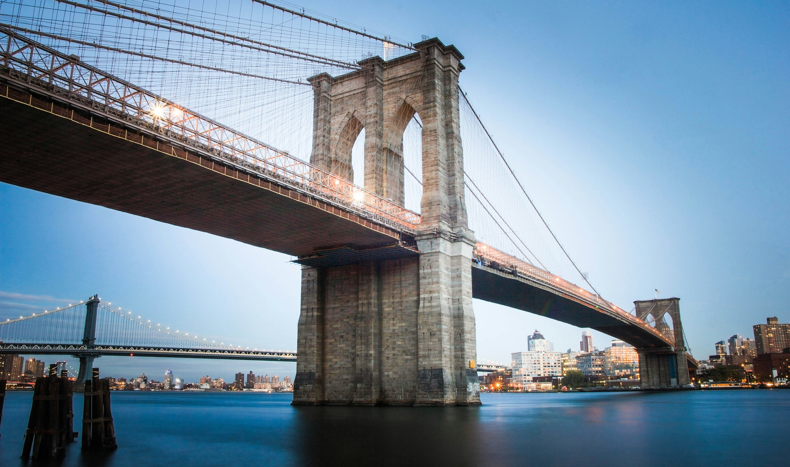

Brooklyn Bridge
The Brooklyn Bridge is a hybrid cable-stayed/suspension bridge in New York City. It connects the boroughs of Manhattan and Brooklyn, spanning the East River. The bridge was designed by John A. Roebling and completed in 1883. It is one of the oldest suspension bridges in the United States and was the longest suspension bridge in the world when it was built. The bridge has a total length of 5,989 feet (1,825 m) and a main span of 1,595 feet (486 m). The bridge is a popular spot for walking and biking, and offers great views of the Manhattan skyline.The Brooklyn Bridge is a hybrid cable-stayed/suspension bridge in New York City. It connects the boroughs of Manhattan and Brooklyn and is a popular tourist attraction.